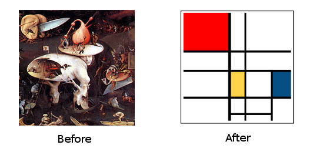

Mondrian
Ok guyz, you have a master degree in Graph Theory, you follow Law of Demeter and you live on S.O.L.I.D principles ?
Let's have some Fun ! (^ω^)
What
It is a set of CLI tools to help you to analyse and refactor highly coupled classes. As you know Law of Demeter and S.O.L.I.D guidances, you need your classes loosely coupled. And for this, there is one only rule : ABSTRACTION

This app provides some helpers to add abstraction into concrete classes with minimum pain.
How
This app does not analyse the details of implementation itself but its structure and particullary its dependencies between types, a.k.a the "efferent coupling".
With the proprer vocabulary ("class", "interface", "method signature", "parameter" and "implementation") and a proper grammar ("depends on", "typed with", "inherits from" etc...), each source code can be transformed into a directed graph (or digraph).
Then, with this abstract representation, it uses some algorithms and some powerfull properties of the graph theory to find what's wrong with the source code.
Unlike other tools like PDepend which produce code metrics (or statistics) on coupling, it goes into a level of atomicity to indeed infer where problems are located.
Why
To ease refactoring, the first thing is to decouple your "monolith". Yes you can re-code a method but the real quality of code is its conformance to the law of Demeter and for that, it's not about average length of methods, code coverage, or number of methods per class or their inheritance depth.
Ok, it's a hint but like any other statistics, it's only a general picture, not a way to guide you and answer to the question : "Where do I begin to refactor the real shit ?"
That's what I try to make with this app by using the fascinating graph theory. I sincerly hope it will help you.
Where
Center of the universe
This tool find the "center of the source code". More precisely it calculates the centrality of the digraph with the eigenvectors of the adjacency matrix. With this you can determinate what component is critical and what component could be refactored later.
Code metrics
Of course there is statistics, it is usefull to evaluates the quality of code. Several algorithms try to find the circumference, radius and some other properties of the digraph.
Strongly Connected Components
Can be renamed : How to avoid cyclic dependencies ? When yo have a cycle in source code, you are really screwd because it's very difficult to know where to break it. This tool finds cycles between vertices in the digraph.
Highly coupled implementation
Like Tyler Durden could say : The first rule of coding is "You do NOT talk about concrete class"
This tool finds paths between two implementations represented by two vertices in the digraph.
Hidden coupling
Unlike strong typed language, PHP has one thing to make refactoring difficultier : Two poorly-coded classes could be coupled without reference in each other. This tool try to find hidden coupling by searching for path in the digraph.
TODO
I want to use the d3js libray to make a dynamic tool for refactoring.